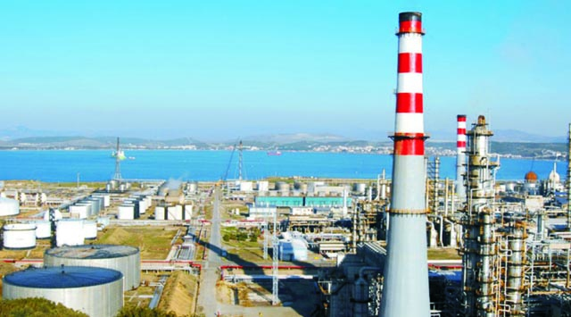
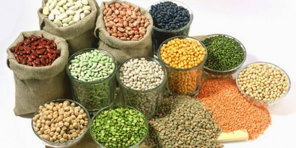

ege bölgesi
Sanayi
Ege Bölgesi tarým, turizm ve sanayinin iç içe olduðu bölgedir. Dünyada ve Türkiye’deki sanayileþme tecrübeleri dikkatle deðerlendirilmekte, çevreyle uyumlu bir sanayileþme için önemli adýmlar atýlmaktadýr. Bölgede organize sanayi bölgelerine dayalý bir kalkýnma modeli benimsenmiþtir. Gýda, Tekstil-konfeksiyon, otomotiv ve oto yan sanayi, madencilik, inþaat malzemeleri sanayi, ambalaj, kimya ve plastik, demir çelik, elektrik-elektronik sanayi dalllarýndaki mevcut faaliyet ve gelecek potansiyeli ile Ege Bölgesi, Türkiye’nin çaðdaþ bir sanayi olma yolundadýr. Bölgede faaliyet gösteren yabancý kuruluþlar arasýnda Samsung, Rockwell, Philip Morris, JR Reynolds, Henkel, Sanyo, Dr. Oetker, National Can, Tetra Pak, Merlin Gerin, Coca Cola ve Amway bulunmaktadýr.
Tarým
Ege Bölgesinde ýlýman Akdeniz iklimi ve bereketli topraklar, tarýmsal faaliyetlere güçlü bir temel teþkil etmektedir. Hububat baþta olmak üzere dünyaca ünlü meþhur tütün, pamuk, zeytin, üzüm, incir üretimi bölgenin en önemli tarýmsal faaliyetleri olarak sayýlabilir. Öte yandan Ege denizine açýk olan bölgede deniz balýkçýlýkðýn yaný sýra, tatlý su ve kültür balýkçýlýðý da geliþmiþtir.

